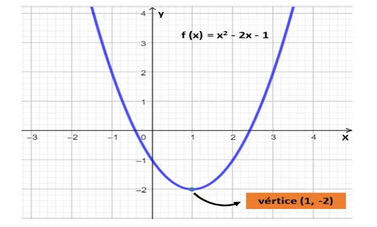
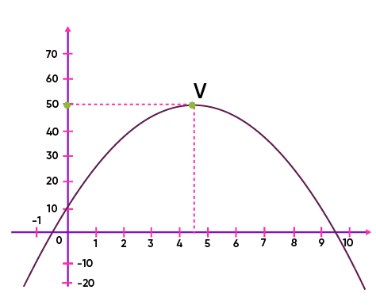
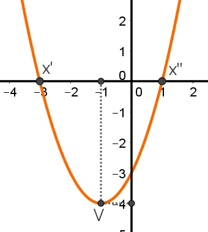

Vértice
O vértice de uma função quadrática é o ponto onde a parábola muda de direção, sendo o ponto de mínimo (se a parábola abre para cima) ou de máximo (se a parábola abre para baixo).
Exemplo:
O vértice de uma função quadrática é o ponto onde a parábola muda de direção, sendo o ponto de mínimo (se a parábola abre para cima) ou de máximo (se a parábola abre para baixo).
Exemplo:

O ponto máximo de uma função quadrática é o vértice da parábola quando ela tem a concavidade voltada para baixo (coeficiente “a” negativo).
Exemplo:

O ponto mínimo de uma função quadrática, f(x)=ax²+bx+c, é o vértice da parábola quando sua concavidade está voltada para cima.
Exemplo:
